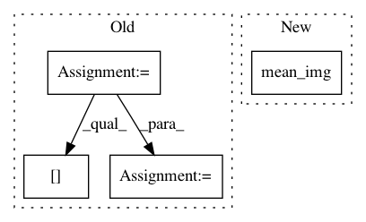

36dd7cf04dcd4e71ca4e1a0086713c51759fd42d,plot_poldrack_space_net.py,,,#,7
Before Change
import os
import sys
sys.path.append(
os.path.join(os.environ["HOME"], "CODE/FORKED/parietal-python"))
from examples.proximal.load_data import load_gain_poldrack
mem = Memory(cachedir="cache", verbose=3)
X, y, _, mask, affine = mem.cache(load_gain_poldrack)(smooth=0)
img_data = np.zeros(list(mask.shape) + [len(X)])
img_data[mask, :] = X.T
// prepare input data for learner
import nibabel
mask_img = nibabel.Nifti1Image(mask.astype(np.int), affine)
X_train = nibabel.Nifti1Image(img_data, affine)
y_train = y
////// Fit and predict ////////////////////////////////////////////////////////////////////////////////////////////////////////////////////
from nilearn.decoding import SpaceNetRegressor
penalty = "TV-L1"
l1_ratio = .3
alpha = None
decoder = SpaceNetRegressor(memory=mem, mask=mask_img, verbose=2,
n_jobs=int(os.environ.get("N_JOBS", 1)),
l1_ratio=l1_ratio, penalty=penalty, alpha=alpha)
decoder.fit(X_train, y_train) // fit
coef_niimg = decoder.coef_img_
coef_niimg.to_filename("poldrack_%s(l1_ratio=%g, alpha=%s)_weights.nii" % (
penalty, l1_ratio, alpha))
After Change
from nilearn.plotting import plot_stat_map
background_img = mean_img(X_train)
for penalty, decoder in decoders.iteritems():
coef_img = mean_img(decoder.coef_img_)
plot_stat_map(coef_img, background_img, title=penalty, display_mode="yz",
cut_coords=[20, -2])
plt.show()
In pattern: SUPERPATTERN
Frequency: 4
Non-data size: 4
Instances
Project Name: nilearn/nilearn
Commit Name: 36dd7cf04dcd4e71ca4e1a0086713c51759fd42d
Time: 2015-07-28
Author: elvis.dohmatob@inria.fr
File Name: plot_poldrack_space_net.py
Class Name:
Method Name:
Project Name: nilearn/nilearn
Commit Name: 986aacd1c7ed2f7000cc9816057f96d59701e066
Time: 2015-07-28
Author: elvis.dohmatob@inria.fr
File Name: plot_poldrack_space_net.py
Class Name:
Method Name:
Project Name: nilearn/nilearn
Commit Name: 98c59811ac8ac88362b6118794b598ed92682eb7
Time: 2015-07-28
Author: elvis.dohmatob@inria.fr
File Name: examples/decoding/plot_poldrack_space_net.py
Class Name:
Method Name:
Project Name: nilearn/nilearn
Commit Name: 49257721ec65c78965df63152b8933e9baebd4a6
Time: 2015-07-28
Author: elvis.dohmatob@inria.fr
File Name: examples/decoding/plot_poldrack_space_net.py
Class Name:
Method Name: